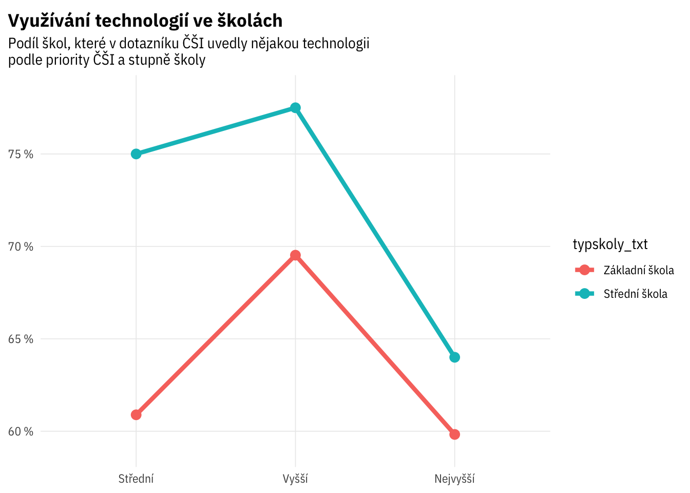
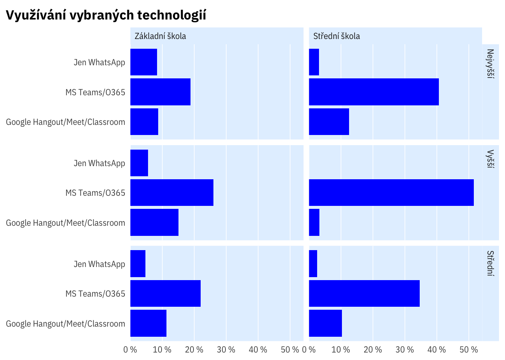
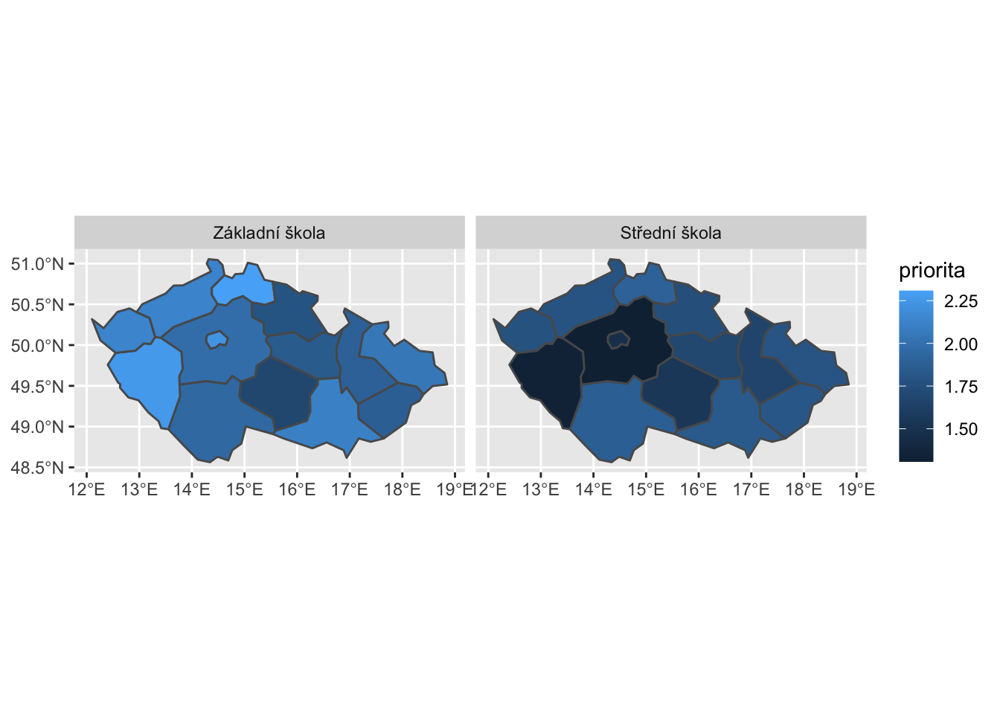
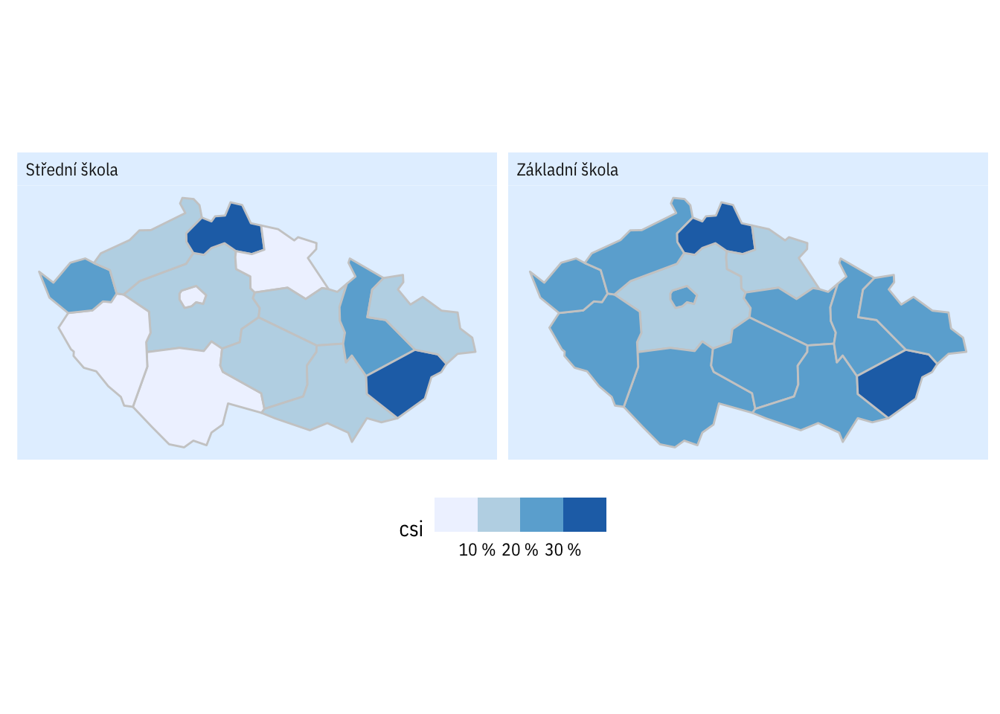
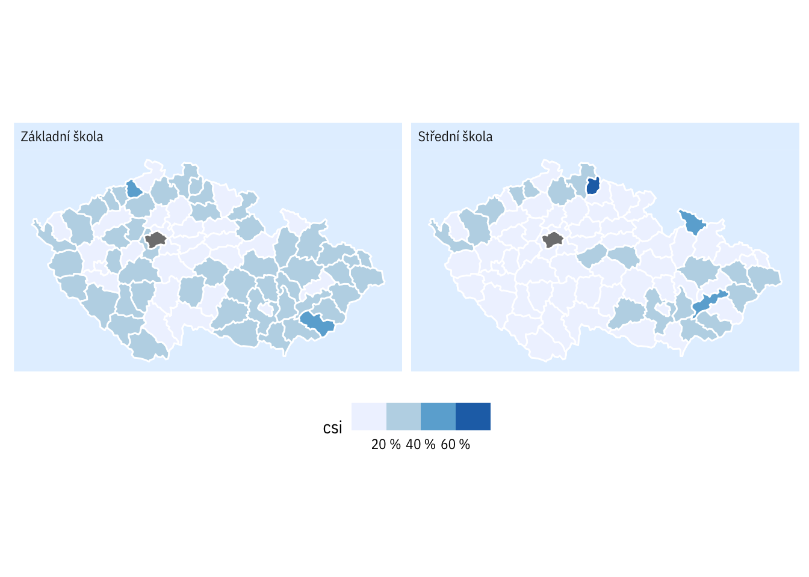
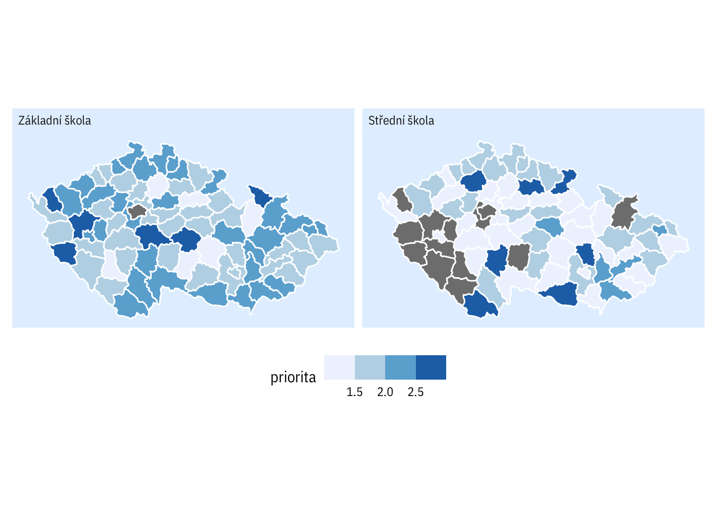
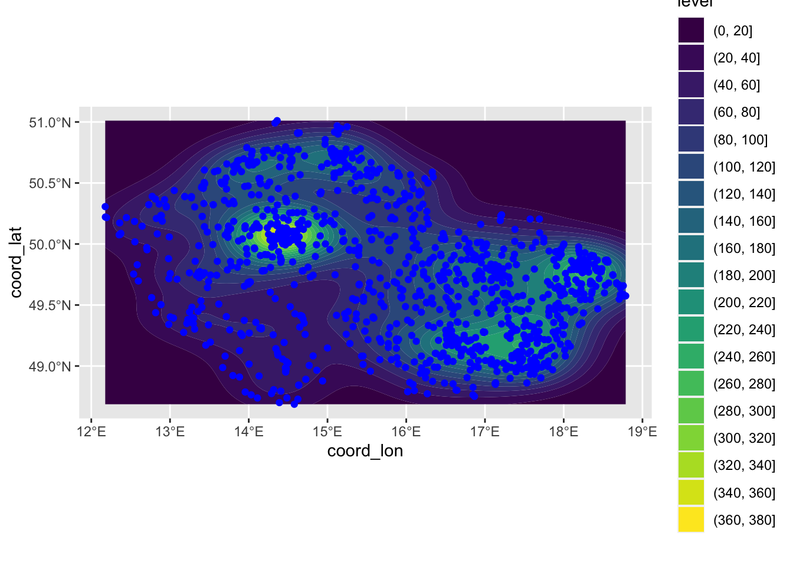
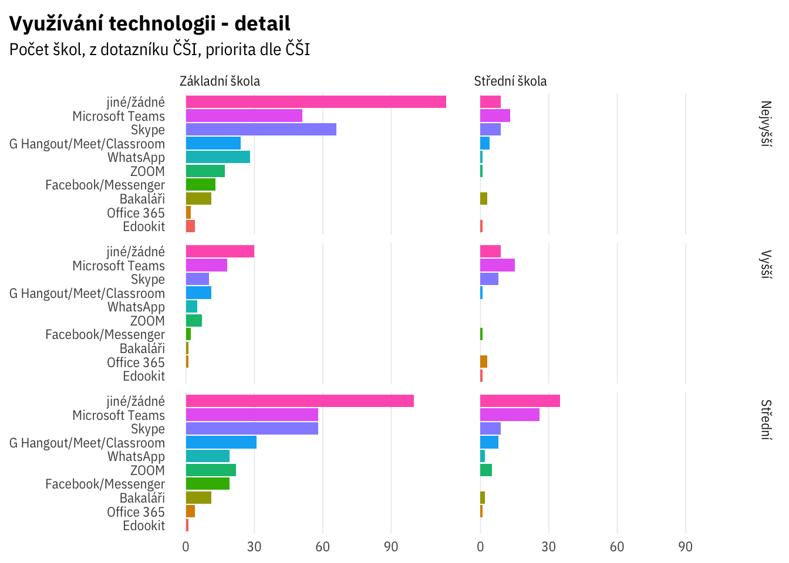

Přehled
## `summarise()` has grouped output by 'priorita'. You can override using the `.groups` argument.
## `summarise()` has grouped output by 'typskoly_txt'. You can override using the `.groups` argument.
## `summarise()` has grouped output by 'kraj_kod', 'kraj_nazev'. You can override using the `.groups` argument.## `summarise()` has grouped output by 'okres_kod'. You can override using the `.groups` argument.## `summarise()` has grouped output by 'kraj_kod', 'kraj_nazev'. You can override using the `.groups` argument.## `summarise()` has grouped output by 'okres_kod', 'kraj_nazev'. You can override using the `.groups` argument.

## Joining, by = "okres_kod"
## Joining, by = c("typskoly_txt", "okres_kod")
## `summarise()` has grouped output by 'kapacita_kat'. You can override using the `.groups` argument.## `summarise()` has grouped output by 'kapacita_kat'. You can override using the `.groups` argument.## `summarise()` has grouped output by 'kapacita_kat'. You can override using the `.groups` argument.## Warning: Removed 4 rows containing non-finite values (stat_density2d_filled).

## `summarise()` has grouped output by 'typskoly_txt', 'priorita', 'text_recoded'. You can override using the `.groups` argument.